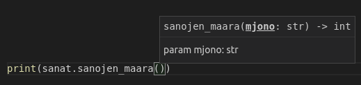

Writing your own Python modules is easy. Any file containing valid Python code can be imported as a module. Let’s assume we have a file named words.py with the following contents:
def first_word(my_string: str):
parts = my_string.split(" ")
return parts[0]
def last_word(my_string: str):
parts = my_string.split(" ")
return parts[-1]
def number_of_words(my_string: str):
parts = my_string.split(" ")
return len(parts)
The functions defined in the file can be accessed by importing the file:
import words
my_string = "Sheila sells seashells by the seashore"
print(words.first_word(my_string))
print(words.last_word(my_string))
print(words.number_of_words(my_string))
NB: the file containing the Python module must be located either in the same directory with the program importing it, or in one of the default Python directories, or else the Python interpreter will not find it when the import statement is executed.
We can use our own modules just as we have learnt to use the modules from the Python standard library:
from words import first_word, last_word
sentence = input("Please type in a sentence: ")
print("The first word was: " + first_word(sentence))
print("The last word was: " + last_word(sentence))
When using modules, type hinting becomes especially useful. If you are using an editor which has built-in support for type hinting, using different modules becomes much easier.
For example, Visual Studio Code will display the type hints when you are writing code:

If a module contains any code which is not contained within a function definition (that is, if the module contains code in the main function of the module), this code is executed automatically whenever the module is imported.
Let’s assume our words.py file also contained some test cases:
def first_word(my_string: str):
parts = my_string.split(" ")
return parts[0]
def last_word(my_string: str):
parts = my_string.split(" ")
return parts[-1]
def number_of_words(my_string: str):
parts = my_string.split(" ")
return len(parts)
print(first_word("This is a test"))
print(last_word("Here we are still testing"))
print(number_of_words("One two three four five"))
Now, if we import the module with an import statement, all the code in the module which is outside the defined functions is automatically executed:
import words
my_string = "Sheila sells seashells by the seashore"
print(words.first_word(my_string))
print(words.last_word(my_string))
print(words.number_of_words(my_string))
As you can see above, this is not a good outcome, because the program we are trying to write is messed with by the test cases from the module itself.
Luckily, there is a solution, and it is one which you have used many times before in the exercises on this course. We just need to test if the program is being executed on its own, or if the code has been imported with an import statement. Python has a built-in variable __name__, which contains the name of the program being executed. If the program is being executed on its own, the value of the variable is __main__. If the program has been imported, the value of the variable is the name of the imported module (in this case, words).
Knowing this, we can add a conditional statement, which lets us only execute the text cases if the program is executed on its own. As you can see below, the structure looks familiar:
def first_word(my_string: str) -> str:
parts = my_string.split(" ")
return parts[0]
def last_word(my_string: str) -> str:
parts = my_string.split(" ")
return parts[-1]
def number_of_words(my_string: str) -> int:
parts = my_string.split(" ")
return len(parts)
if __name__ == "__main__":
# testing functionality
print(first_word("This is a test"))
print(last_word("Here we are still testing"))
print(number_of_words("One two three four five"))
If you execute the module on its own, the test cases are printed out:
When the module is imported into another program, the test cases are not executed:
import words
my_string = "Sheila sells seashells by the seashore"
print(words.first_word(my_string))
print(words.last_word(my_string))
print(words.number_of_words(my_string))
In the exercises on this course, whenever you were asked to write functions, you were usually also expected to wrap test cases in an if __name__ == "__main__" block exactly like the one above. Now you know why.
Please respond to a quick questionnaire on this week’s materials.